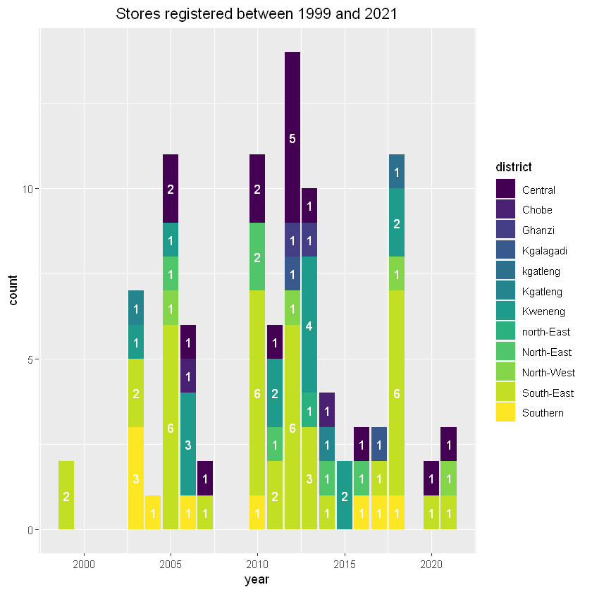

<!DOCTYPE html>

<html>
  <head>
    <meta charset="utf-8" />
    <meta name="viewport" content="width=device-width, initial-scale=1.0" /><meta name="generator" content="Docutils 0.17.1: http://docutils.sourceforge.net/" />

    <title>Choppies Stores &#8212; My sample book</title>
    
  <!-- Loaded before other Sphinx assets -->
  <link href="_static/styles/theme.css?digest=1999514e3f237ded88cf" rel="stylesheet">
<link href="_static/styles/pydata-sphinx-theme.css?digest=1999514e3f237ded88cf" rel="stylesheet">

    
  <link rel="stylesheet"
    href="_static/vendor/fontawesome/5.13.0/css/all.min.css">
  <link rel="preload" as="font" type="font/woff2" crossorigin
    href="_static/vendor/fontawesome/5.13.0/webfonts/fa-solid-900.woff2">
  <link rel="preload" as="font" type="font/woff2" crossorigin
    href="_static/vendor/fontawesome/5.13.0/webfonts/fa-brands-400.woff2">

    <link rel="stylesheet" type="text/css" href="_static/pygments.css" />
    <link rel="stylesheet" href="_static/styles/sphinx-book-theme.css?digest=62ba249389abaaa9ffc34bf36a076bdc1d65ee18" type="text/css" />
    <link rel="stylesheet" type="text/css" href="_static/togglebutton.css" />
    <link rel="stylesheet" type="text/css" href="_static/copybutton.css" />
    <link rel="stylesheet" type="text/css" href="_static/mystnb.css" />
    <link rel="stylesheet" type="text/css" href="_static/sphinx-thebe.css" />
    <link rel="stylesheet" type="text/css" href="_static/design-style.b7bb847fb20b106c3d81b95245e65545.min.css" />
    
  <!-- Pre-loaded scripts that we'll load fully later -->
  <link rel="preload" as="script" href="_static/scripts/pydata-sphinx-theme.js?digest=1999514e3f237ded88cf">

    <script data-url_root="./" id="documentation_options" src="_static/documentation_options.js"></script>
    <script src="_static/jquery.js"></script>
    <script src="_static/underscore.js"></script>
    <script src="_static/doctools.js"></script>
    <script src="_static/clipboard.min.js"></script>
    <script src="_static/copybutton.js"></script>
    <script src="_static/scripts/sphinx-book-theme.js?digest=f31d14ad54b65d19161ba51d4ffff3a77ae00456"></script>
    <script>let toggleHintShow = 'Click to show';</script>
    <script>let toggleHintHide = 'Click to hide';</script>
    <script>let toggleOpenOnPrint = 'true';</script>
    <script src="_static/togglebutton.js"></script>
    <script>var togglebuttonSelector = '.toggle, .admonition.dropdown, .tag_hide_input div.cell_input, .tag_hide-input div.cell_input, .tag_hide_output div.cell_output, .tag_hide-output div.cell_output, .tag_hide_cell.cell, .tag_hide-cell.cell';</script>
    <script src="_static/design-tabs.js"></script>
    <script>const THEBE_JS_URL = "https://unpkg.com/thebe@0.8.2/lib/index.js"
const thebe_selector = ".thebe,.cell"
const thebe_selector_input = "pre"
const thebe_selector_output = ".output, .cell_output"
</script>
    <script async="async" src="_static/sphinx-thebe.js"></script>
    <link rel="index" title="Index" href="genindex.html" />
    <link rel="search" title="Search" href="search.html" />
    <link rel="next" title="Choppies in Botswana" href="choppies_in_botswana.html" />
    <link rel="prev" title="Welcome to your Jupyter Book" href="intro.html" />
    <meta name="viewport" content="width=device-width, initial-scale=1" />
    <meta name="docsearch:language" content="None">
    

    <!-- Google Analytics -->
    
  </head>
  <body data-spy="scroll" data-target="#bd-toc-nav" data-offset="60">
<!-- Checkboxes to toggle the left sidebar -->
<input type="checkbox" class="sidebar-toggle" name="__navigation" id="__navigation" aria-label="Toggle navigation sidebar">
<label class="overlay overlay-navbar" for="__navigation">
    <div class="visually-hidden">Toggle navigation sidebar</div>
</label>
<!-- Checkboxes to toggle the in-page toc -->
<input type="checkbox" class="sidebar-toggle" name="__page-toc" id="__page-toc" aria-label="Toggle in-page Table of Contents">
<label class="overlay overlay-pagetoc" for="__page-toc">
    <div class="visually-hidden">Toggle in-page Table of Contents</div>
</label>
<!-- Headers at the top -->
<div class="announcement header-item noprint"></div>
<div class="header header-item noprint"></div>

    
    <div class="container-fluid" id="banner"></div>

    

    <div class="container-xl">
      <div class="row">
          
<!-- Sidebar -->
<div class="bd-sidebar noprint" id="site-navigation">
    <div class="bd-sidebar__content">
        <div class="bd-sidebar__top"><div class="navbar-brand-box">
    <a class="navbar-brand text-wrap" href="index.html">
      
        <!-- `logo` is deprecated in Sphinx 4.0, so remove this when we stop supporting 3 -->
        
      
      
      
      
      
      <h1 class="site-logo" id="site-title">My sample book</h1>
      
    </a>
</div><form class="bd-search d-flex align-items-center" action="search.html" method="get">
  <i class="icon fas fa-search"></i>
  <input type="search" class="form-control" name="q" id="search-input" placeholder="Search this book..." aria-label="Search this book..." autocomplete="off" >
</form><nav class="bd-links" id="bd-docs-nav" aria-label="Main">
    <div class="bd-toc-item active">
        
        <ul class="nav bd-sidenav bd-sidenav__home-link">
            <li class="toctree-l1">
                <a class="reference internal" href="intro.html">
                    Welcome to your Jupyter Book
                </a>
            </li>
        </ul>
        <ul class="current nav bd-sidenav">
 <li class="toctree-l1 current active">
  <a class="current reference internal" href="#">
   Choppies Stores
  </a>
 </li>
 <li class="toctree-l1">
  <a class="reference internal" href="choppies_in_botswana.html">
   Choppies in Botswana
  </a>
 </li>
 <li class="toctree-l1">
  <a class="reference internal" href="choppies_competition.html">
   Choppies Competition
  </a>
 </li>
 <li class="toctree-l1">
  <a class="reference internal" href="internet_subscriptions.html">
   Internet Subscriptions
  </a>
 </li>
</ul>

    </div>
</nav></div>
        <div class="bd-sidebar__bottom">
             <!-- To handle the deprecated key -->
            
            <div class="navbar_extra_footer">
            Powered by <a href="https://jupyterbook.org">Jupyter Book</a>
            </div>
            
        </div>
    </div>
    <div id="rtd-footer-container"></div>
</div>


          


          
<!-- A tiny helper pixel to detect if we've scrolled -->
<div class="sbt-scroll-pixel-helper"></div>
<!-- Main content -->
<div class="col py-0 content-container">
    
    <div class="header-article row sticky-top noprint">
        


<div class="col py-1 d-flex header-article-main">
    <div class="header-article__left">
        
        <label for="__navigation"
  class="headerbtn"
  data-toggle="tooltip"
data-placement="right"
title="Toggle navigation"
>
  

<span class="headerbtn__icon-container">
  <i class="fas fa-bars"></i>
  </span>

</label>

        
    </div>
    <div class="header-article__right">
<button onclick="toggleFullScreen()"
  class="headerbtn"
  data-toggle="tooltip"
data-placement="bottom"
title="Fullscreen mode"
>
  

<span class="headerbtn__icon-container">
  <i class="fas fa-expand"></i>
  </span>

</button>

<div class="menu-dropdown menu-dropdown-repository-buttons">
  <button class="headerbtn menu-dropdown__trigger"
      aria-label="Source repositories">
      <i class="fab fa-github"></i>
  </button>
  <div class="menu-dropdown__content">
    <ul>
      <li>
        <a href="https://github.com/executablebooks/jupyter-book"
   class="headerbtn"
   data-toggle="tooltip"
data-placement="left"
title="Source repository"
>
  

<span class="headerbtn__icon-container">
  <i class="fab fa-github"></i>
  </span>
<span class="headerbtn__text-container">repository</span>
</a>

      </li>
      
      <li>
        <a href="https://github.com/executablebooks/jupyter-book/issues/new?title=Issue%20on%20page%20%2FChoppies.html&body=Your%20issue%20content%20here."
   class="headerbtn"
   data-toggle="tooltip"
data-placement="left"
title="Open an issue"
>
  

<span class="headerbtn__icon-container">
  <i class="fas fa-lightbulb"></i>
  </span>
<span class="headerbtn__text-container">open issue</span>
</a>

      </li>
      
    </ul>
  </div>
</div>

<div class="menu-dropdown menu-dropdown-download-buttons">
  <button class="headerbtn menu-dropdown__trigger"
      aria-label="Download this page">
      <i class="fas fa-download"></i>
  </button>
  <div class="menu-dropdown__content">
    <ul>
      <li>
        <a href="_sources/Choppies.md"
   class="headerbtn"
   data-toggle="tooltip"
data-placement="left"
title="Download source file"
>
  

<span class="headerbtn__icon-container">
  <i class="fas fa-file"></i>
  </span>
<span class="headerbtn__text-container">.md</span>
</a>

      </li>
      
      <li>
        
<button onclick="printPdf(this)"
  class="headerbtn"
  data-toggle="tooltip"
data-placement="left"
title="Print to PDF"
>
  

<span class="headerbtn__icon-container">
  <i class="fas fa-file-pdf"></i>
  </span>
<span class="headerbtn__text-container">.pdf</span>
</button>

      </li>
      
    </ul>
  </div>
</div>
<label for="__page-toc"
  class="headerbtn headerbtn-page-toc"
  
>
  

<span class="headerbtn__icon-container">
  <i class="fas fa-list"></i>
  </span>

</label>

    </div>
</div>

<!-- Table of contents -->
<div class="col-md-3 bd-toc show noprint">
    <div class="tocsection onthispage pt-5 pb-3">
        <i class="fas fa-list"></i> Contents
    </div>
    <nav id="bd-toc-nav" aria-label="Page">
        <ul class="visible nav section-nav flex-column">
 <li class="toc-h2 nav-item toc-entry">
  <a class="reference internal nav-link" href="#summary">
   Summary
  </a>
 </li>
 <li class="toc-h2 nav-item toc-entry">
  <a class="reference internal nav-link" href="#number-of-stores-and-locations">
   Number of Stores and Locations
  </a>
  <ul class="nav section-nav flex-column">
   <li class="toc-h3 nav-item toc-entry">
    <a class="reference internal nav-link" href="#choppies-by-year">
     Choppies By Year
    </a>
   </li>
  </ul>
 </li>
</ul>

    </nav>
</div>
    </div>
    <div class="article row">
        <div class="col pl-md-3 pl-lg-5 content-container">
            <!-- Table of contents that is only displayed when printing the page -->
            <div id="jb-print-docs-body" class="onlyprint">
                <h1>Choppies Stores</h1>
                <!-- Table of contents -->
                <div id="print-main-content">
                    <div id="jb-print-toc">
                        
                        <div>
                            <h2> Contents </h2>
                        </div>
                        <nav aria-label="Page">
                            <ul class="visible nav section-nav flex-column">
 <li class="toc-h2 nav-item toc-entry">
  <a class="reference internal nav-link" href="#summary">
   Summary
  </a>
 </li>
 <li class="toc-h2 nav-item toc-entry">
  <a class="reference internal nav-link" href="#number-of-stores-and-locations">
   Number of Stores and Locations
  </a>
  <ul class="nav section-nav flex-column">
   <li class="toc-h3 nav-item toc-entry">
    <a class="reference internal nav-link" href="#choppies-by-year">
     Choppies By Year
    </a>
   </li>
  </ul>
 </li>
</ul>

                        </nav>
                    </div>
                </div>
            </div>
            <main id="main-content" role="main">
                
              <div>
                
  <section class="tex2jax_ignore mathjax_ignore" id="choppies-stores">
<h1>Choppies Stores<a class="headerlink" href="#choppies-stores" title="Permalink to this headline">#</a></h1>
<section id="summary">
<h2>Summary<a class="headerlink" href="#summary" title="Permalink to this headline">#</a></h2>
<div class="highlight-R notranslate"><div class="highlight"><pre><span></span><span class="c1">#Choppies.csv</span>
<span class="n">choppies</span> <span class="o">&lt;-</span> <span class="nf">read.csv</span><span class="p">(</span><span class="s">&quot;choppies.csv&quot;</span><span class="p">)</span>
</pre></div>
</div>
<div class="highlight-R notranslate"><div class="highlight"><pre><span></span><span class="n">choppies</span><span class="o">$</span><span class="n">Name</span> <span class="o">&lt;-</span> <span class="nf">as.character</span><span class="p">(</span><span class="n">choppies</span><span class="o">$</span><span class="n">Name</span> <span class="p">)</span>
<span class="n">choppies</span><span class="o">$</span><span class="n">Address</span> <span class="o">&lt;-</span> <span class="nf">as.character</span><span class="p">(</span><span class="n">choppies</span><span class="o">$</span><span class="n">Address</span><span class="p">)</span>
<span class="n">choppies</span><span class="o">$</span><span class="n">Date</span> <span class="o">&lt;-</span> <span class="nf">as.Date</span><span class="p">(</span><span class="n">choppies</span><span class="o">$</span><span class="n">Date</span><span class="p">,</span> <span class="s">&quot;%d/%m/%Y&quot;</span><span class="p">)</span>
</pre></div>
</div>
<div class="highlight-R notranslate"><div class="highlight"><pre><span></span><span class="nf">names</span><span class="p">(</span><span class="n">choppies</span><span class="p">)</span> <span class="o">&lt;-</span> <span class="nf">tolower</span><span class="p">(</span><span class="nf">names</span><span class="p">(</span><span class="n">choppies</span><span class="p">))</span>
</pre></div>
</div>
<div class="highlight-R notranslate"><div class="highlight"><pre><span></span><span class="nf">str</span><span class="p">(</span><span class="n">choppies</span><span class="p">)</span>
</pre></div>
</div>
<div class="highlight-none notranslate"><div class="highlight"><pre><span></span>&#39;data.frame&#39;:	108 obs. of  10 variables:
 $ name      : chr  &quot;Choppies Bobonong&quot; &quot;Choppies Letlhakane&quot; &quot;Choppies Mahalapye&quot; &quot;Choppies Mahalapye&quot; ...
 $ district  : chr  &quot;Central&quot; &quot;Central&quot; &quot;Central&quot; &quot;Central&quot; ...
 $ town      : chr  &quot;Bobonong&quot; &quot;Letlhakane&quot; &quot;Mahalapye&quot; &quot;Mahalapye&quot; ...
 $ address   : chr  &quot;Moilamba Ward,Cash Bazaar building&quot; &quot;Nkosho Ward,Letlhakane&quot; &quot;Plot 6042, Main Mall, Mahalapye&quot; &quot;Watershed Mall, A1,  Mahalapye&quot; ...
 $ latitude  : num  -22 -21.4 -23.1 -23.1 NA ...
 $ longitude : num  28.4 25.6 26.8 26.8 NA ...
 $ date      : Date, format: &quot;2012-09-12&quot; &quot;2007-10-12&quot; ...
 $ cancelled : logi  NA NA NA NA NA NA ...
 $ registered: chr  &quot;Y&quot; &quot;Y&quot; &quot;Y&quot; &quot;Y&quot; ...
 $ store     : chr  &quot;choppies&quot; &quot;choppies&quot; &quot;choppies&quot; &quot;choppies&quot; ...
</pre></div>
</div>
<div class="highlight-R notranslate"><div class="highlight"><pre><span></span><span class="nf">summary</span><span class="p">(</span><span class="n">choppies</span><span class="p">)</span>
</pre></div>
</div>
<div class="highlight-none notranslate"><div class="highlight"><pre><span></span>     Name             District             Town             Address         
 Length:108         Length:108         Length:108         Length:108        
 Class :character   Class :character   Class :character   Class :character  
 Mode  :character   Mode  :character   Mode  :character   Mode  :character  
                                                                            
                                                                            
                                                                            
                                                                            
    latitude        longitude         Date           Cancelled     
 Min.   :-26.02   Min.   :21.64   Length:108         Mode:logical  
 1st Qu.:-24.66   1st Qu.:25.55   Class :character   NA&#39;s:108      
 Median :-24.61   Median :25.87   Mode  :character                 
 Mean   :-23.48   Mean   :25.81                                    
 3rd Qu.:-21.98   3rd Qu.:26.11                                    
 Max.   :-17.80   Max.   :28.42                                    
 NA&#39;s   :29       NA&#39;s   :29                                       
  Registered           Store          
 Length:108         Length:108        
 Class :character   Class :character  
 Mode  :character   Mode  :character  
</pre></div>
</div>
</section>
<section id="number-of-stores-and-locations">
<h2>Number of Stores and Locations<a class="headerlink" href="#number-of-stores-and-locations" title="Permalink to this headline">#</a></h2>
<div class="highlight-R notranslate"><div class="highlight"><pre><span></span><span class="nf">library</span><span class="p">(</span><span class="n">dplyr</span><span class="p">)</span>
<span class="nf">library</span><span class="p">(</span><span class="n">tidyverse</span><span class="p">)</span>
</pre></div>
</div>
<div class="highlight-none notranslate"><div class="highlight"><pre><span></span>-- Attaching packages --------------------------------------- tidyverse 1.3.1 --

v ggplot2 3.3.6     v purrr   0.3.4
v tibble  3.1.7     v stringr 1.4.0
v tidyr   1.2.0     v forcats 0.5.1
v readr   2.1.2     

-- Conflicts ------------------------------------------ tidyverse_conflicts() --
x dplyr::filter() masks stats::filter()
x dplyr::lag()    masks stats::lag()
</pre></div>
</div>
<p>South-East region contains the highest number of stores followed by Kweneng and Central districts. Combined, the the three districts contain 71% of the total stores in the country.</p>
<div class="highlight-R notranslate"><div class="highlight"><pre><span></span><span class="n">district_summary</span> <span class="o">&lt;-</span> <span class="n">choppies</span> <span class="o">%&gt;%</span> 
<span class="nf">group_by</span><span class="p">(</span><span class="n">district</span><span class="p">)</span> <span class="o">%&gt;%</span> 
<span class="nf">summarise</span><span class="p">(</span><span class="n">n</span> <span class="o">=</span> <span class="nf">n</span><span class="p">())</span> <span class="o">%&gt;%</span> 
<span class="nf">mutate</span><span class="p">(</span><span class="n">percent</span> <span class="o">=</span> <span class="nf">round</span><span class="p">(</span><span class="m">100</span><span class="o">*</span><span class="n">n</span><span class="o">/</span><span class="nf">sum</span><span class="p">(</span><span class="n">n</span><span class="p">),</span><span class="m">2</span><span class="p">))</span> <span class="o">%&gt;%</span>
<span class="nf">arrange</span><span class="p">(</span><span class="nf">desc</span><span class="p">(</span><span class="n">n</span><span class="p">))</span> <span class="o">%&gt;%</span>
<span class="nf">mutate</span><span class="p">(</span><span class="n">cum_per</span> <span class="o">=</span> <span class="nf">cumsum</span><span class="p">(</span><span class="n">percent</span><span class="p">))</span> <span class="o">%&gt;%</span>
<span class="nf">head</span><span class="p">()</span>

<span class="n">district_summary</span>
</pre></div>
</div>
<table class="dataframe">
<caption>A tibble: 6 × 4</caption>
<thead>
	<tr><th scope=col>district</th><th scope=col>n</th><th scope=col>percent</th><th scope=col>cum_per</th></tr>
	<tr><th scope=col>&lt;chr&gt;</th><th scope=col>&lt;int&gt;</th><th scope=col>&lt;dbl&gt;</th><th scope=col>&lt;dbl&gt;</th></tr>
</thead>
<tbody>
	<tr><td>South-East</td><td>42</td><td>38.89</td><td>38.89</td></tr>
	<tr><td>Kweneng   </td><td>18</td><td>16.67</td><td>55.56</td></tr>
	<tr><td>Central   </td><td>17</td><td>15.74</td><td>71.30</td></tr>
	<tr><td>Southern  </td><td> 9</td><td> 8.33</td><td>79.63</td></tr>
	<tr><td>North-East</td><td> 7</td><td> 6.48</td><td>86.11</td></tr>
	<tr><td>North-West</td><td> 4</td><td> 3.70</td><td>89.81</td></tr>
</tbody>
</table>
<div class="highlight-R notranslate"><div class="highlight"><pre><span></span><span class="n">top_3</span> <span class="o">&lt;-</span> <span class="n">district_summary</span> <span class="o">%&gt;%</span>
<span class="nf">top_n</span><span class="p">(</span><span class="m">3</span><span class="p">)</span> <span class="o">%&gt;%</span>
<span class="nf">select</span><span class="p">(</span><span class="n">district</span><span class="p">)</span> <span class="o">%&gt;%</span>
<span class="nf">pull</span><span class="p">()</span>

<span class="n">top_3</span>
</pre></div>
</div>
<div class="highlight-none notranslate"><div class="highlight"><pre><span></span>Selecting by percent
</pre></div>
</div>
<style>
.list-inline {list-style: none; margin:0; padding: 0}
.list-inline>li {display: inline-block}
.list-inline>li:not(:last-child)::after {content: "\00b7"; padding: 0 .5ex}
</style>
<ol class=list-inline><li>'South-East'</li><li>'Kweneng'</li><li>'Central'</li></ol>
<div class="highlight-R notranslate"><div class="highlight"><pre><span></span><span class="n">top_district</span> <span class="o">&lt;-</span> <span class="n">choppies</span> <span class="o">%&gt;%</span> 
<span class="nf">select</span><span class="p">(</span><span class="n">district</span><span class="p">,</span><span class="n">town</span><span class="p">)</span> <span class="o">%&gt;%</span>
<span class="nf">filter</span><span class="p">(</span><span class="n">district</span> <span class="o">%in%</span> <span class="n">top_3</span><span class="p">)</span> <span class="o">%&gt;%</span>
<span class="nf">group_by</span><span class="p">(</span><span class="n">district</span><span class="p">,</span><span class="n">town</span><span class="p">)</span> <span class="o">%&gt;%</span>
<span class="nf">arrange</span><span class="p">(</span><span class="n">district</span><span class="p">)</span> <span class="o">%&gt;%</span>
<span class="nf">distinct</span><span class="p">()</span>
</pre></div>
</div>
<p>Listing the towns in the top districts and the number of stores in the top towns.</p>
<div class="highlight-R notranslate"><div class="highlight"><pre><span></span><span class="nf">pivot_wider</span><span class="p">(</span><span class="n">top_district</span><span class="p">,</span> <span class="n">names_from</span> <span class="o">=</span> <span class="n">district</span><span class="p">,</span> <span class="n">values_from</span> <span class="o">=</span> <span class="n">town</span><span class="p">,</span> <span class="n">values_fn</span> <span class="o">=</span> <span class="n">list</span><span class="p">)</span>
</pre></div>
</div>
<table class="dataframe">
<caption>A tibble: 1 × 3</caption>
<thead>
	<tr><th scope=col>Central</th><th scope=col>Kweneng</th><th scope=col>South-East</th></tr>
	<tr><th scope=col>&lt;list&gt;</th><th scope=col>&lt;list&gt;</th><th scope=col>&lt;list&gt;</th></tr>
</thead>
<tbody>
	<tr><td>Bobonong  , Letlhakane, Mahalapye , Palapye   , Phikwe    , Serowe    , Shoshong  , Sebina    , Tonota    , Tutume    , Nata      </td><td>Gabane       , Mogoditshane , Metsimotlhabe, Molepolole   , Letlhakeng   , Thamaga      , Thebephatswa </td><td>Gaborone   , Phakalane  , Tlokweng   , Lobatse    , Ramotswa   , Glen Valley</td></tr>
</tbody>
</table>
<div class="highlight-R notranslate"><div class="highlight"><pre><span></span><span class="n">top_towns_n</span> <span class="o">&lt;-</span> <span class="n">choppies</span> <span class="o">%&gt;%</span> <span class="nf">group_by</span><span class="p">(</span><span class="n">town</span><span class="p">)</span> <span class="o">%&gt;%</span> 
<span class="nf">summarise</span><span class="p">(</span><span class="n">n</span> <span class="o">=</span> <span class="nf">n</span><span class="p">())</span> <span class="o">%&gt;%</span> 
<span class="nf">arrange</span><span class="p">(</span><span class="nf">desc</span><span class="p">(</span><span class="n">n</span><span class="p">))</span> <span class="o">%&gt;%</span>
<span class="nf">top_n</span><span class="p">(</span><span class="m">10</span><span class="p">)</span> 

<span class="n">top_towns_n</span>
</pre></div>
</div>
<div class="highlight-none notranslate"><div class="highlight"><pre><span></span>Selecting by n
</pre></div>
</div>
<table class="dataframe">
<caption>A tibble: 10 × 2</caption>
<thead>
	<tr><th scope=col>town</th><th scope=col>n</th></tr>
	<tr><th scope=col>&lt;chr&gt;</th><th scope=col>&lt;int&gt;</th></tr>
</thead>
<tbody>
	<tr><td>Gaborone    </td><td>28</td></tr>
	<tr><td>Mogoditshane</td><td> 9</td></tr>
	<tr><td>Francistown </td><td> 7</td></tr>
	<tr><td>Lobatse     </td><td> 7</td></tr>
	<tr><td>Mahalapye   </td><td> 3</td></tr>
	<tr><td>Maun        </td><td> 3</td></tr>
	<tr><td>Molepolole  </td><td> 3</td></tr>
	<tr><td>Palapye     </td><td> 3</td></tr>
	<tr><td>Ramotswa    </td><td> 3</td></tr>
	<tr><td>Tlokweng    </td><td> 3</td></tr>
</tbody>
</table>
<div class="highlight-R notranslate"><div class="highlight"><pre><span></span><span class="n">top_towns</span> <span class="o">&lt;-</span> <span class="n">top_towns_n</span> <span class="o">%&gt;%</span>
<span class="nf">select</span><span class="p">(</span><span class="n">town</span><span class="p">)</span> <span class="o">%&gt;%</span>
<span class="nf">pull</span><span class="p">()</span>

<span class="n">top_towns</span>
</pre></div>
</div>
<style>
.list-inline {list-style: none; margin:0; padding: 0}
.list-inline>li {display: inline-block}
.list-inline>li:not(:last-child)::after {content: "\00b7"; padding: 0 .5ex}
</style>
<ol class=list-inline><li>'Gaborone'</li><li>'Mogoditshane'</li><li>'Francistown'</li><li>'Lobatse'</li><li>'Mahalapye'</li><li>'Maun'</li><li>'Molepolole'</li><li>'Palapye'</li><li>'Ramotswa'</li><li>'Tlokweng'</li></ol>
<section id="choppies-by-year">
<h3>Choppies By Year<a class="headerlink" href="#choppies-by-year" title="Permalink to this headline">#</a></h3>
<p>Choppies saw the largest growth between 2005 and 2013. Between these years, South-East, Kweneng and Central saw the high number of stores.</p>
<div class="highlight-R notranslate"><div class="highlight"><pre><span></span><span class="n">choppies</span><span class="o">$</span><span class="n">month</span> <span class="o">&lt;-</span> <span class="nf">months</span><span class="p">(</span><span class="n">choppies</span><span class="o">$</span><span class="n">date</span><span class="p">)</span>
<span class="n">choppies</span><span class="o">$</span><span class="n">year</span> <span class="o">&lt;-</span> <span class="nf">as.numeric</span><span class="p">(</span><span class="nf">format</span><span class="p">(</span><span class="n">choppies</span><span class="o">$</span><span class="n">date</span><span class="p">,</span> <span class="s">&quot;%Y&quot;</span><span class="p">))</span>
</pre></div>
</div>
<div class="highlight-R notranslate"><div class="highlight"><pre><span></span><span class="nf">str</span><span class="p">(</span><span class="n">choppies</span><span class="p">)</span>
</pre></div>
</div>
<div class="highlight-none notranslate"><div class="highlight"><pre><span></span>&#39;data.frame&#39;:	108 obs. of  12 variables:
 $ name      : chr  &quot;Choppies Bobonong&quot; &quot;Choppies Letlhakane&quot; &quot;Choppies Mahalapye&quot; &quot;Choppies Mahalapye&quot; ...
 $ district  : chr  &quot;Central&quot; &quot;Central&quot; &quot;Central&quot; &quot;Central&quot; ...
 $ town      : chr  &quot;Bobonong&quot; &quot;Letlhakane&quot; &quot;Mahalapye&quot; &quot;Mahalapye&quot; ...
 $ address   : chr  &quot;Moilamba Ward,Cash Bazaar building&quot; &quot;Nkosho Ward,Letlhakane&quot; &quot;Plot 6042, Main Mall, Mahalapye&quot; &quot;Watershed Mall, A1,  Mahalapye&quot; ...
 $ latitude  : num  -22 -21.4 -23.1 -23.1 NA ...
 $ longitude : num  28.4 25.6 26.8 26.8 NA ...
 $ date      : Date, format: &quot;2012-09-12&quot; &quot;2007-10-12&quot; ...
 $ cancelled : logi  NA NA NA NA NA NA ...
 $ registered: chr  &quot;Y&quot; &quot;Y&quot; &quot;Y&quot; &quot;Y&quot; ...
 $ store     : chr  &quot;choppies&quot; &quot;choppies&quot; &quot;choppies&quot; &quot;choppies&quot; ...
 $ month     : chr  &quot;September&quot; &quot;October&quot; &quot;January&quot; NA ...
 $ year      : num  2012 2007 2012 NA 2012 ...
</pre></div>
</div>
<div class="highlight-R notranslate"><div class="highlight"><pre><span></span><span class="n">choppies</span> <span class="o">%&gt;%</span> 
<span class="nf">filter</span><span class="p">(</span><span class="o">!</span><span class="nf">is.na</span><span class="p">(</span><span class="n">year</span><span class="p">))</span> <span class="o">%&gt;%</span>
<span class="nf">group_by</span><span class="p">(</span><span class="n">year</span><span class="p">)</span> <span class="o">%&gt;%</span>
<span class="nf">summarise</span><span class="p">(</span><span class="n">n</span> <span class="o">=</span> <span class="nf">n</span><span class="p">())</span> <span class="o">%&gt;%</span>
<span class="nf">arrange</span><span class="p">(</span><span class="n">year</span><span class="p">)</span> 
</pre></div>
</div>
<table class="dataframe">
<caption>A tibble: 17 × 2</caption>
<thead>
	<tr><th scope=col>year</th><th scope=col>n</th></tr>
	<tr><th scope=col>&lt;dbl&gt;</th><th scope=col>&lt;int&gt;</th></tr>
</thead>
<tbody>
	<tr><td>1999</td><td> 2</td></tr>
	<tr><td>2003</td><td> 7</td></tr>
	<tr><td>2004</td><td> 1</td></tr>
	<tr><td>2005</td><td>11</td></tr>
	<tr><td>2006</td><td> 6</td></tr>
	<tr><td>2007</td><td> 2</td></tr>
	<tr><td>2010</td><td>11</td></tr>
	<tr><td>2011</td><td> 6</td></tr>
	<tr><td>2012</td><td>14</td></tr>
	<tr><td>2013</td><td>10</td></tr>
	<tr><td>2014</td><td> 4</td></tr>
	<tr><td>2015</td><td> 2</td></tr>
	<tr><td>2016</td><td> 3</td></tr>
	<tr><td>2017</td><td> 3</td></tr>
	<tr><td>2018</td><td>11</td></tr>
	<tr><td>2020</td><td> 2</td></tr>
	<tr><td>2021</td><td> 3</td></tr>
</tbody>
</table>
<div class="highlight-R notranslate"><div class="highlight"><pre><span></span><span class="n">choppies</span> <span class="o">%&gt;%</span> <span class="nf">filter</span><span class="p">(</span><span class="o">!</span><span class="nf">is.na</span><span class="p">(</span><span class="n">year</span><span class="p">))</span> <span class="o">%&gt;%</span>
<span class="nf">filter</span><span class="p">(</span><span class="nf">between</span><span class="p">(</span><span class="n">year</span><span class="p">,</span><span class="m">2005</span><span class="p">,</span><span class="m">2013</span><span class="p">))</span> <span class="o">%&gt;%</span>
<span class="nf">group_by</span><span class="p">(</span><span class="n">year</span><span class="p">,</span> <span class="n">district</span><span class="p">)</span> <span class="o">%&gt;%</span>
<span class="nf">summarise</span><span class="p">(</span><span class="n">n</span> <span class="o">=</span> <span class="nf">n</span><span class="p">())</span> <span class="o">%&gt;%</span>
<span class="nf">arrange</span><span class="p">(</span><span class="nf">desc</span><span class="p">(</span><span class="n">n</span><span class="p">))</span> <span class="o">%&gt;%</span>
<span class="nf">head</span><span class="p">()</span>
</pre></div>
</div>
<div class="highlight-none notranslate"><div class="highlight"><pre><span></span>`summarise()` has grouped output by &#39;year&#39;. You can override using the
`.groups` argument.
</pre></div>
</div>
<table class="dataframe">
<caption>A grouped_df: 6 × 3</caption>
<thead>
	<tr><th scope=col>year</th><th scope=col>district</th><th scope=col>n</th></tr>
	<tr><th scope=col>&lt;dbl&gt;</th><th scope=col>&lt;chr&gt;</th><th scope=col>&lt;int&gt;</th></tr>
</thead>
<tbody>
	<tr><td>2005</td><td>South-East</td><td>6</td></tr>
	<tr><td>2010</td><td>South-East</td><td>6</td></tr>
	<tr><td>2012</td><td>South-East</td><td>6</td></tr>
	<tr><td>2012</td><td>Central   </td><td>5</td></tr>
	<tr><td>2013</td><td>Kweneng   </td><td>4</td></tr>
	<tr><td>2006</td><td>Kweneng   </td><td>3</td></tr>
</tbody>
</table>
<div class="highlight-R notranslate"><div class="highlight"><pre><span></span><span class="nf">library</span><span class="p">(</span><span class="n">ggplot2</span><span class="p">)</span>
<span class="nf">library</span><span class="p">(</span><span class="n">viridis</span><span class="p">)</span>
</pre></div>
</div>
<div class="highlight-none notranslate"><div class="highlight"><pre><span></span>Loading required package: viridisLite
</pre></div>
</div>
<div class="highlight-R notranslate"><div class="highlight"><pre><span></span><span class="n">c</span> <span class="o">&lt;-</span> <span class="n">choppies</span> <span class="o">%&gt;%</span> 
<span class="nf">filter</span><span class="p">(</span><span class="o">!</span><span class="nf">is.na</span><span class="p">(</span><span class="n">year</span><span class="p">))</span> <span class="o">%&gt;%</span>
<span class="nf">select</span><span class="p">(</span><span class="n">district</span><span class="p">,</span><span class="n">year</span><span class="p">)</span> 

<span class="n">df</span> <span class="o">&lt;-</span> <span class="nf">data.frame</span><span class="p">(</span><span class="n">c</span><span class="p">)</span>
<span class="n">df</span><span class="o">$</span><span class="n">district</span> <span class="o">&lt;-</span> <span class="nf">factor</span><span class="p">(</span><span class="n">df</span><span class="o">$</span><span class="n">district</span><span class="p">)</span>
<span class="nf">str</span><span class="p">(</span><span class="n">df</span><span class="p">)</span>
</pre></div>
</div>
<div class="highlight-none notranslate"><div class="highlight"><pre><span></span>&#39;data.frame&#39;:	98 obs. of  2 variables:
 $ district: Factor w/ 12 levels &quot;Central&quot;,&quot;Chobe&quot;,..: 1 1 1 1 1 1 1 1 1 1 ...
 $ year    : num  2012 2007 2012 2012 2005 ...
</pre></div>
</div>
<div class="highlight-R notranslate"><div class="highlight"><pre><span></span><span class="n">freq</span> <span class="o">&lt;-</span> <span class="n">df</span> <span class="o">%&gt;%</span>
<span class="nf">group_by</span><span class="p">(</span><span class="n">district</span><span class="p">,</span> <span class="n">year</span><span class="p">)</span> <span class="o">%&gt;%</span>
<span class="nf">mutate</span><span class="p">(</span><span class="n">freq</span> <span class="o">=</span> <span class="nf">n</span><span class="p">())</span>
</pre></div>
</div>
<div class="highlight-R notranslate"><div class="highlight"><pre><span></span><span class="nf">ggplot</span><span class="p">(</span><span class="n">df</span><span class="p">,</span><span class="nf">aes</span><span class="p">(</span><span class="n">year</span><span class="p">,</span><span class="n">fill</span> <span class="o">=</span> <span class="n">district</span><span class="p">))</span> <span class="o">+</span> 
<span class="nf">geom_bar</span><span class="p">()</span> <span class="o">+</span>
<span class="nf">ggtitle</span><span class="p">(</span><span class="s">&quot;Stores registered between 1999 and 2021&quot;</span><span class="p">)</span> <span class="o">+</span>
<span class="nf">theme</span><span class="p">(</span><span class="n">plot.title</span> <span class="o">=</span> <span class="nf">element_text</span><span class="p">(</span><span class="n">hjust</span> <span class="o">=</span> <span class="m">0.5</span><span class="p">))</span> <span class="o">+</span>
 <span class="nf">geom_text</span><span class="p">(</span><span class="nf">aes</span><span class="p">(</span><span class="n">label</span> <span class="o">=</span> <span class="nf">after_stat</span><span class="p">(</span><span class="n">count</span><span class="p">)),</span> <span class="n">stat</span> <span class="o">=</span> <span class="s">&quot;count&quot;</span><span class="p">,</span> 
           <span class="n">position</span> <span class="o">=</span> <span class="nf">position_stack</span><span class="p">(</span><span class="n">vjust</span> <span class="o">=</span> <span class="m">0.5</span><span class="p">),</span>
           <span class="n">color</span> <span class="o">=</span> <span class="s">&quot;white&quot;</span><span class="p">)</span> <span class="o">+</span> 
<span class="nf">scale_fill_viridis</span><span class="p">(</span><span class="n">discrete</span> <span class="o">=</span> <span class="kc">TRUE</span><span class="p">)</span>
</pre></div>
</div>
<p></p>
</section>
</section>
</section>

    <script type="text/x-thebe-config">
    {
        requestKernel: true,
        binderOptions: {
            repo: "binder-examples/jupyter-stacks-datascience",
            ref: "master",
        },
        codeMirrorConfig: {
            theme: "abcdef",
            mode: "python"
        },
        kernelOptions: {
            kernelName: "python3",
            path: "./."
        },
        predefinedOutput: true
    }
    </script>
    <script>kernelName = 'python3'</script>

              </div>
              
            </main>
            <footer class="footer-article noprint">
                
    <!-- Previous / next buttons -->
<div class='prev-next-area'>
    <a class='left-prev' id="prev-link" href="intro.html" title="previous page">
        <i class="fas fa-angle-left"></i>
        <div class="prev-next-info">
            <p class="prev-next-subtitle">previous</p>
            <p class="prev-next-title">Welcome to your Jupyter Book</p>
        </div>
    </a>
    <a class='right-next' id="next-link" href="choppies_in_botswana.html" title="next page">
    <div class="prev-next-info">
        <p class="prev-next-subtitle">next</p>
        <p class="prev-next-title">Choppies in Botswana</p>
    </div>
    <i class="fas fa-angle-right"></i>
    </a>
</div>
            </footer>
        </div>
    </div>
    <div class="footer-content row">
        <footer class="col footer"><p>
  
    By The Jupyter Book Community<br/>
  
      &copy; Copyright 2022.<br/>
</p>
        </footer>
    </div>
    
</div>


      </div>
    </div>
  
  <!-- Scripts loaded after <body> so the DOM is not blocked -->
  <script src="_static/scripts/pydata-sphinx-theme.js?digest=1999514e3f237ded88cf"></script>


  </body>
</html>